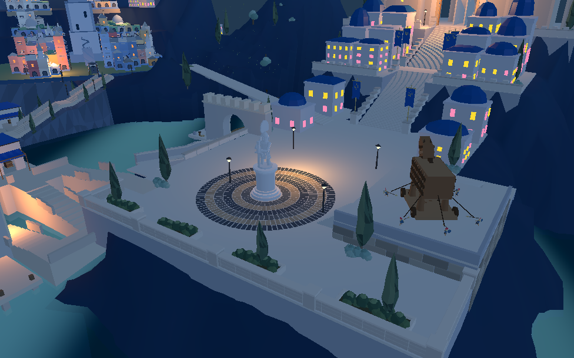
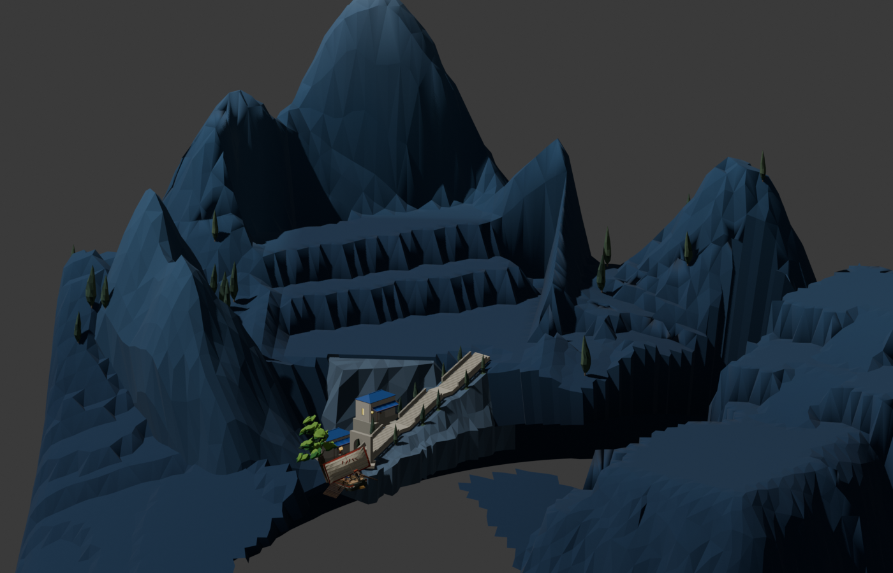

孤立树冠换为完整柏树
实际排查发现原灰绿球团是单独树冠几何，中心点与地面接触，不能说是整体悬空坐标错误。压扁树冠的试验仍然不好看，已放弃。当前复用既有 Blender 柏树，按间距和根部支撑选出31株，原完整圆冠树保留。
已接入 8931原游戏 与同一Godot。主山坡/桥边岩壁仍需进一步对照目标，不把这次替换等同于地形完成。
 现在：桥附近孤立球状树冠已替换。
现在：桥附近孤立球状树冠已替换。 上一批同机位。
上一批同机位。
同一Godot工程。
Blender r03 地形和植物布局检视，不包含完整城市建筑和海面。31株位置与筛选记录 · Godot几何检查。新柏树4个合并材质面、4960三角形；退役独立圆团实例为0。网页广场1406点和原船上下船检查通过。